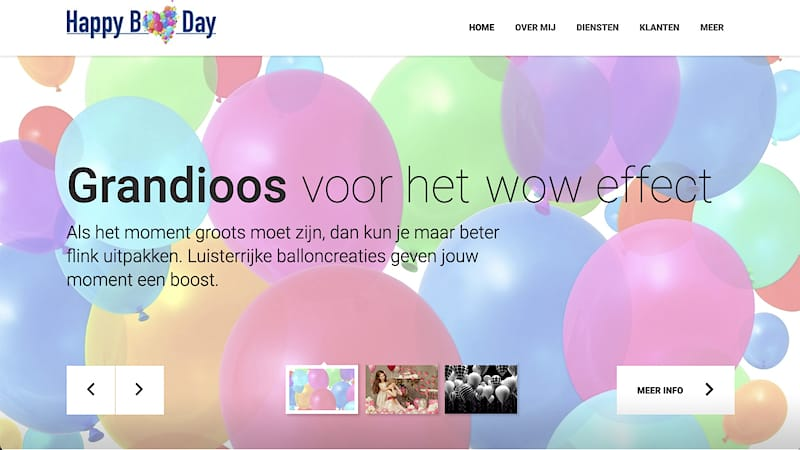
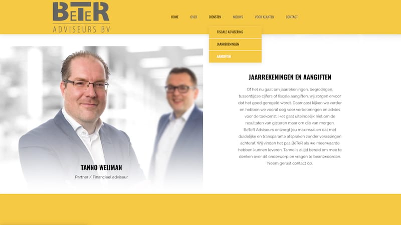
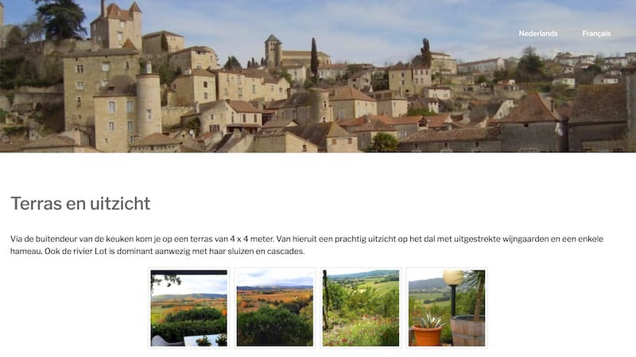

<div class="port-holder">
	<div class="row">
		<!-- Project Close Button -->
		<div class="col-md-12">	
			<ul class="pclose">
				<li>
					<a id="portfolio-close" href="#" title="Close Project">
						<i class="fa fa-times-circle-o"></i>
					</a>
				</li>
			</ul>	          	
		</div>
		<!--/Project Close Button -->
		<!-- Project Title -->
			<div class="project-title">	
				<h1>Portfolio renejansen.in</h1>
				<p>Klantprojecten Zelf Geleverd</p>
			</div>
		<!-- /Project Title end-->

		<!-- Project slider -->
			<div class="row">
				<div></div>
			</div>
		<!-- /Project slider -->		
		<div class="col-md-12">
			<div class="portfolio-media">
	              <div id="project-carousel" class="owl-carousel owl-theme">
					                <div class="item"><a href="https://www.happyballoonday.nl" target="_blank"></a></div>
					                <div class="item"><a href="https://www.beteradviseurs.nl" target="_blank"></a></div>
					                <div class="item"><a href="https://www.maisonronde.nl" target="_blank"></a></div>
	              </div>
			</div>
		</div>
		<!-- /Project slider end-->

		<!-- Project Details -->
			<div class="col-md-12">
				<h2>MET TOEWIJDING GELEVERD</h2>
				<p>Klik op de slides om mijn eigen werk live te zien. Ik lever online proposities met of zonder een content management systeem, maar altijd volledige responsive. Dat wil zeggen dat de website op elk apparaat goed tot zijn recht komt. Ook de website die je nu leest is een eigen fabrikaat.</p>
			</div>
		<!-- /Project Details end -->
	</div>
</div>